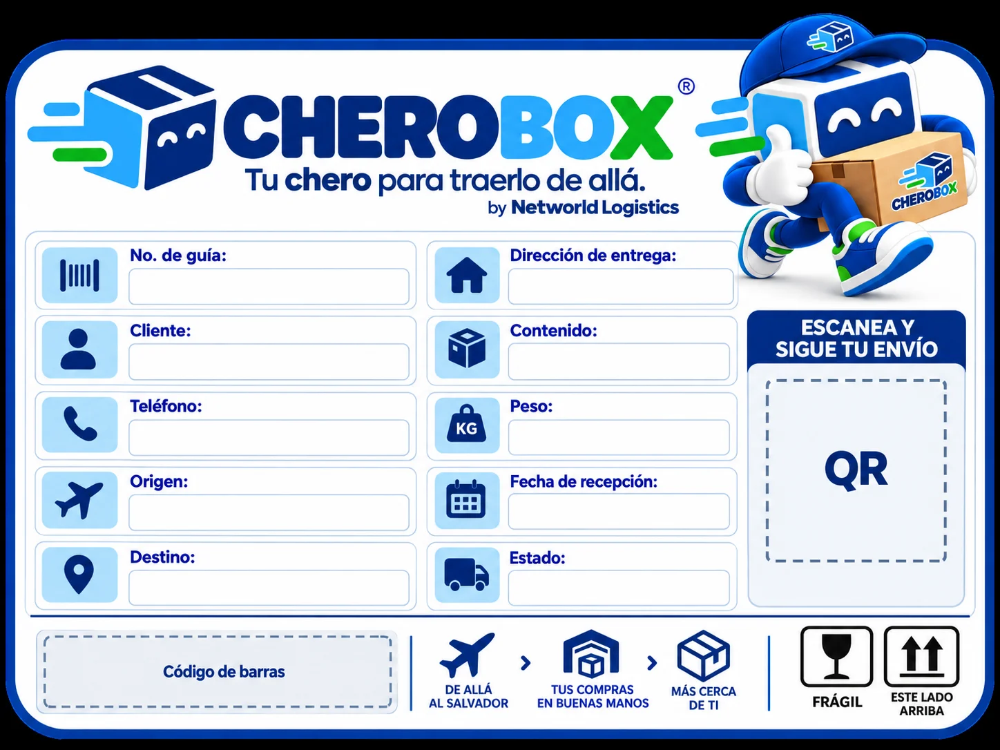
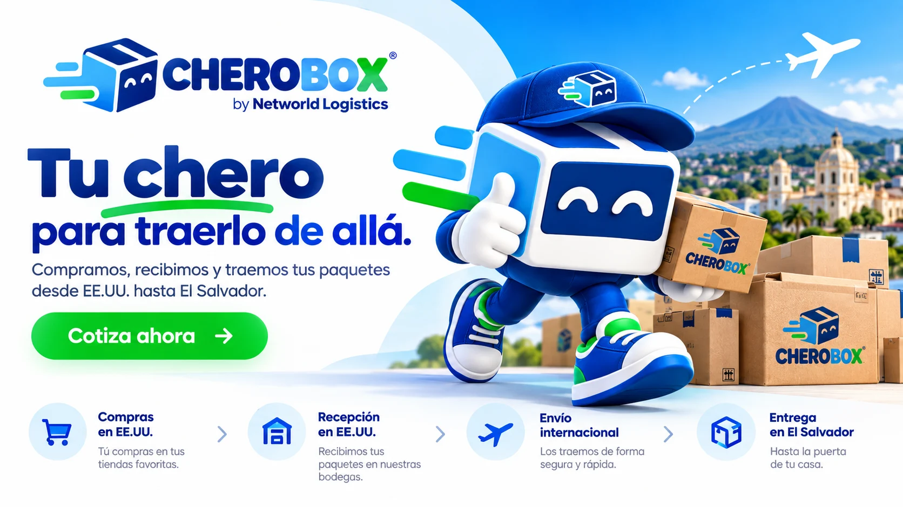
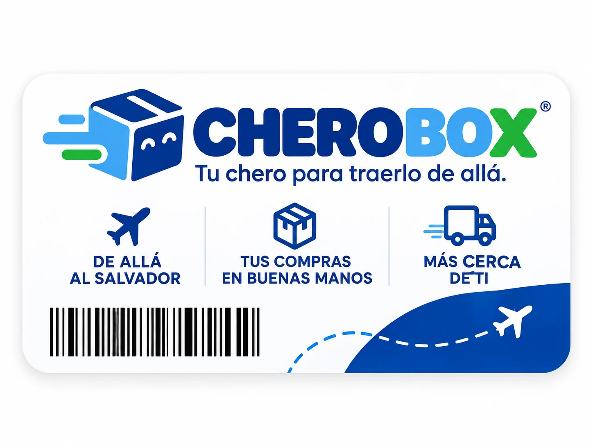

Atención personalizada
Una conversación clara para orientar tu compra o envío.
CHEROBOX by Networld Logistics
Compramos, recibimos y traemos tus paquetes desde EE.UU. hasta El Salvador.
Una línea comercial de Networld Logistics para compras y paquetería internacional.

Fácil de entender
Una guía clara desde la compra hasta la coordinación de entrega en El Salvador.
Comprá en tus tiendas favoritas.
Tus paquetes llegan a nuestra dirección de recepción.
Coordinamos su envío hacia El Salvador.
Coordinamos la entrega de tu paquete.
Compras que se mueven
Te orientamos sobre tu envío antes de coordinarlo. Algunos artículos pueden requerir revisión adicional según su naturaleza, documentación y operación.

Comprá donde querás
Podés enviarnos el enlace de una tienda de EE.UU. para revisar tu compra. Las referencias son ilustrativas y no implican alianzas comerciales.

Compra asistida
Mandanos el enlace de lo que querés comprar y te ayudamos a entender el siguiente paso.
Quiero ayuda con mi compra ↗Respaldo que acompaña
Una conversación clara para orientar tu compra o envío.
Información disponible sobre el proceso de coordinación.
CHEROBOX forma parte de Networld Logistics.
Revisamos el contexto de transporte y documentación.
Coordinamos el cierre local de tu paquete.
Preguntas frecuentes
Si tu caso necesita una revisión particular, escribinos por WhatsApp.
Escribinos por WhatsApp con el enlace o la descripción de tu compra, junto con los datos que ya tengas.
El peso se confirma al recibir el paquete. Podemos orientarte con la información disponible antes de coordinar.
Revisamos el tipo de artículo, sus requisitos y documentación antes de avanzar.
El tiempo depende de ruta, recepción, documentación y operación. Te indicamos el contexto aplicable a tu envío.
Coordinamos contigo la entrega en El Salvador según el tipo de paquete y la operación.
Sí, podemos revisar pequeños envíos comerciales y orientarte sobre la información necesaria.
Sí. Mandanos el enlace de lo que querés comprar y conversemos sobre cómo ayudarte.

CHEROBOX by Networld Logistics
Mandáselo a tu chero.
Cotizar por WhatsApp ↗